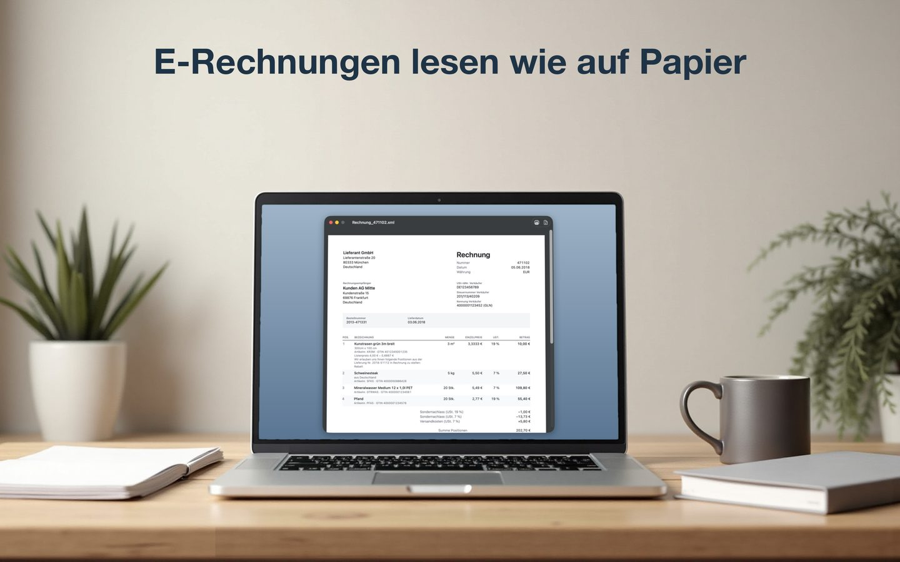
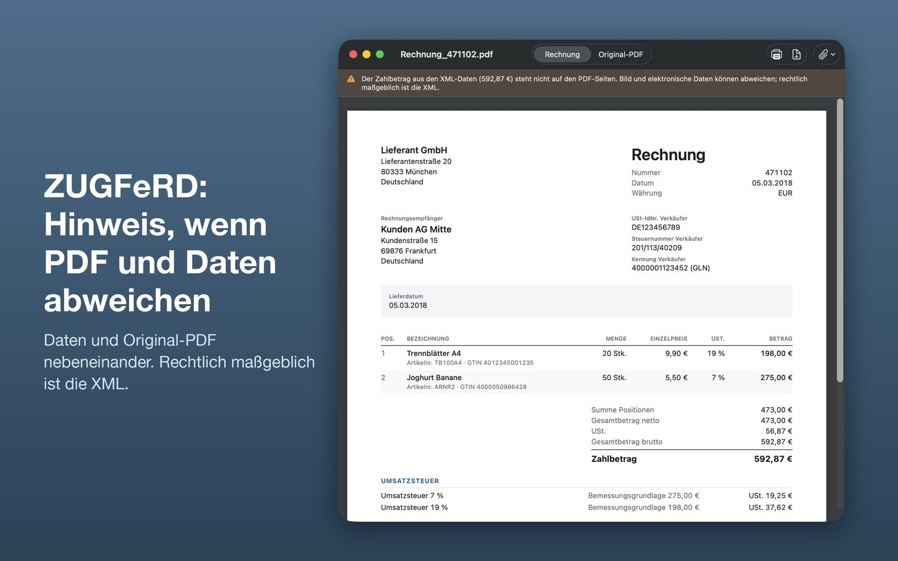
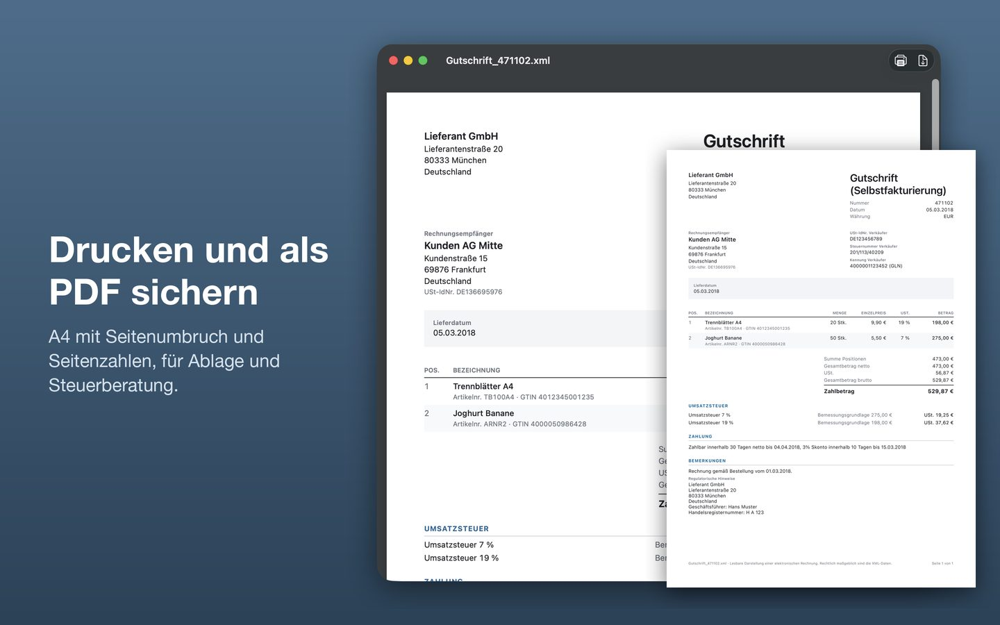

Belegblick
E-Rechnungen lesen wie auf Papier. XRechnung und ZUGFeRD öffnen, prüfen, drucken und als PDF sichern, auf Mac, iPhone und iPad.
Bald im App Store.



Was Belegblick kann
- XRechnung in UBL und CII, ZUGFeRD ab 2.0, Factur-X und Peppol-Rechnungen öffnen
- Verkäufer, Käufer, Positionen, Umsatzsteuer, Zahlbetrag und IBAN auf einen Blick
- Bei ZUGFeRD ein Hinweis, wenn der Zahlbetrag der XML-Daten nicht im PDF steht
- Drucken auf A4 und als PDF sichern, eingebettete Anhänge speichern
- Alles auf Ihrem Gerät, keine Internetverbindung, kein Konto, kein Abo
Belegblick zeigt Rechnungen an. Es prüft keine Rechnungsregeln und erstellt keine Rechnungen.
Beispieldateien
Zum Ausprobieren: XRechnung (UBL), Rechnung (CII), ZUGFeRD-PDF. Fiktive Testdaten, Herkunft und Lizenz.